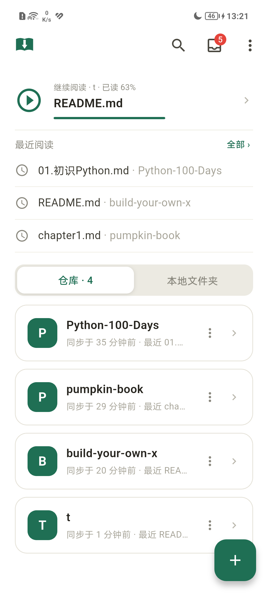
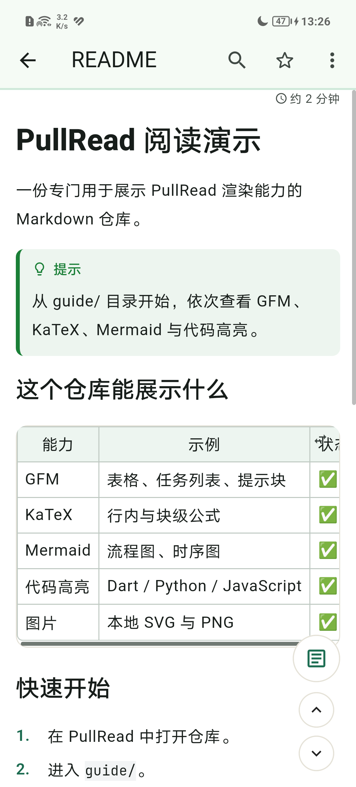
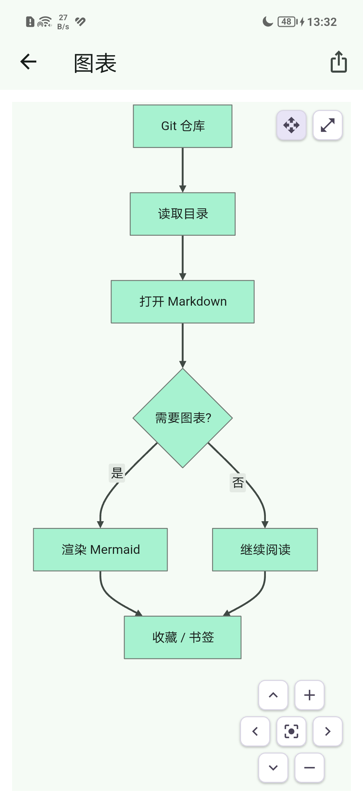
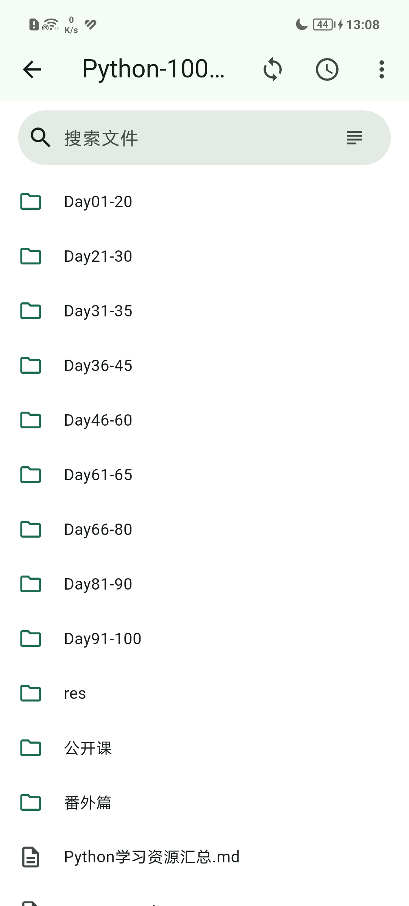

原目录，不扁平化
按仓库原本的目录结构浏览，子目录逐级进入，面包屑随时回到根目录。文件可按名称或最近修改排序，阅读状态直接显示在列表里。
目录树
面包屑
未读筛选
CLONE ONCE. READ, PULL, REPEAT.
PullRead 拉读是跨平台原生笔记仓库阅读器。克隆公开 Git 仓库到设备，或直接打开本地文件夹，离线阅读 Markdown、Notebook、代码、图表与公式。Android / iPadOS / Windows，只读、无后端。



WHY PULLREAD
不经过第三方渲染服务，不把笔记上传到云端。仓库克隆到设备，剩下的交给 PullRead。
按仓库原本的目录结构浏览，子目录逐级进入，面包屑随时回到根目录。文件可按名称或最近修改排序，阅读状态直接显示在列表里。
Markdown 与 GFM、Jupyter Notebook、190+ 语言代码高亮。浮动目录、底部翻页、阅读进度记忆与段落书签，让长文也能一路读下去。
28 种 Mermaid 图表原生渲染，KaTeX 行内与块级公式、表格、折叠块、SVG 图片都能正常显示。超宽图表可全屏缩放查看。
文件名与正文双模式，空格分隔多词 AND。跨仓库搜索按仓库分组，支持历史记录、标签筛选与断链检查。
不经过 git 也能读：Android SAF 授权任意文件夹，桌面直接选目录。增量镜像复用同一套浏览、渲染、搜索与进度管线。
只有克隆与拉取，没有编辑、commit 或 push。阅读进度、收藏与书签以 JSON 存在仓库的 .meta 目录，随仓库一起走。
READ THE REPO
不导入、不转换、不重新排版你的知识库。PullRead 直接读仓库里的文件，把原始结构留给你。
01 STRUCTURE
目录树保留仓库原本的形状，子目录逐级进入，面包屑随时回到仓库根。文件列表显示读到多少、是否读完，工具栏可以只看未读。

02 READING
GFM 告警、表格、折叠块、代码高亮与行号、浮动目录、上一页/下一页。阅读进度按文件保存，重新打开自动回到上次的位置。
03 RENDER
28 种 Mermaid 图表、KaTeX 公式、Jupyter Notebook 与 SVG 图片都在本地渲染。超宽图表自动缩放，点按进入全屏查看。
BUILD FROM SOURCE
Flutter + libgit2，Android 为主，iPadOS 与 Windows 从源码构建。README 里有完整的功能清单与发版流程。
# 需要 Flutter 3.47+ git clone https://github.com/interset-wq/pullread.git cd pullread flutter pub get flutter run
GET PULLREAD
下载 Android APK，或从源码构建 iPadOS / Windows 版本。公开仓库开箱即读，数据留在设备上。